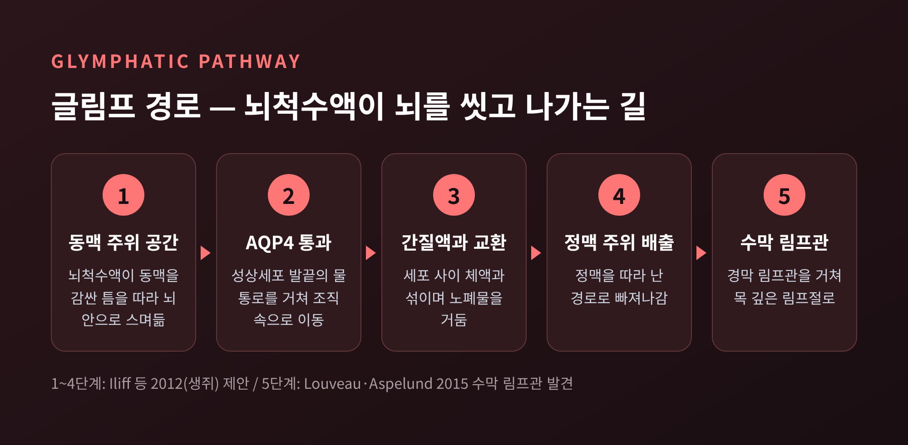
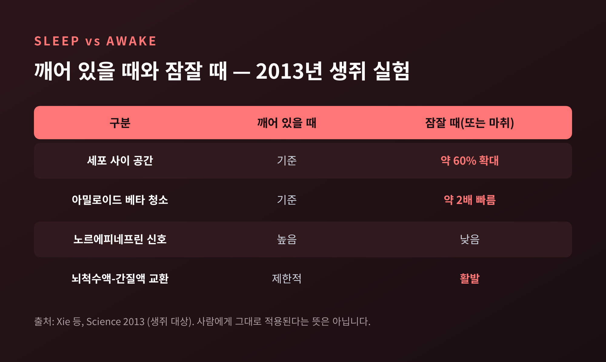
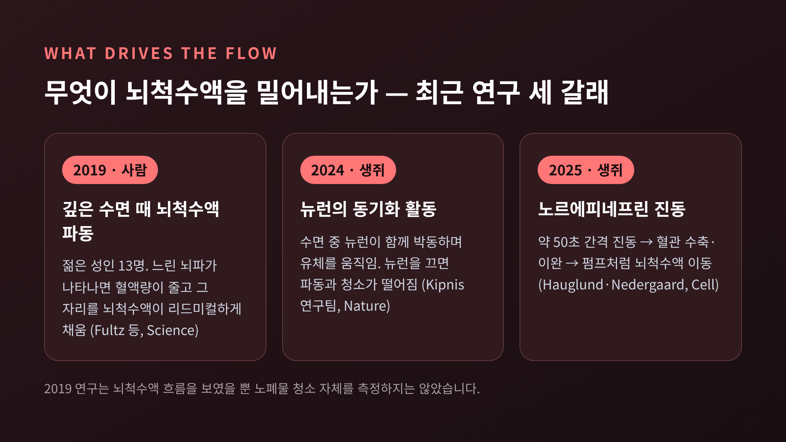
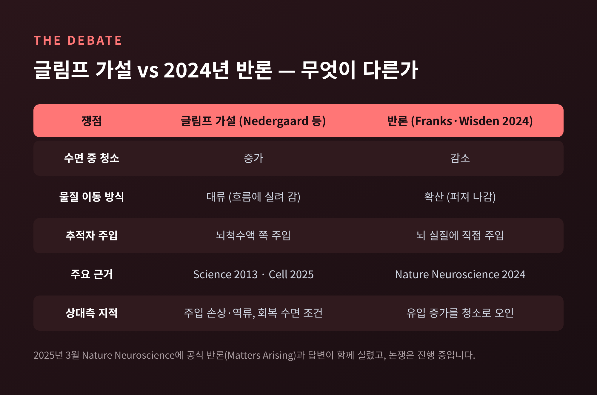
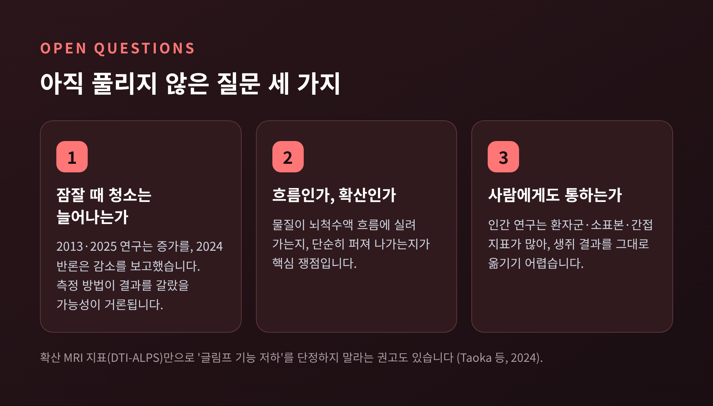

글림프 시스템 — 잠자는 동안 뇌는 어떻게 노폐물을 씻어낼까
이번 글에서는 뇌의 청소 체계로 알려진 글림프 시스템을 정리해 보겠습니다. 언제, 누가, 무엇을 발견했는지부터 최근의 반론까지 차례로 짚어 봅니다.
먼저 요점만 추리면 이렇습니다.
- 뇌 조직 안에는 림프관이 없어, 노폐물이 어디로 빠지는지가 오랜 수수께끼였습니다.
- 2012~2013년 생쥐 연구에서 뇌척수액이 혈관 주변을 따라 뇌를 씻어내고, 잠잘 때 그 흐름이 활발해진다는 가설이 나왔습니다.
- 2024년에는 정반대 결과도 발표되어, 지금은 학계가 활발히 논쟁하는 주제입니다.
■ 뇌에는 왜 하수도가 없었을까
몸의 조직 대부분에는 림프관이 지나갑니다. 세포 사이에 남는 체액과 단백질을 거둬 혈액으로 돌려보내는 통로입니다. 그런데 뇌 조직 내부에서는 이런 림프관이 보이지 않았습니다.
뇌도 끊임없이 일하며 대사 찌꺼기를 만듭니다. 알츠하이머병과 관련된 아밀로이드 베타 같은 단백질도 그중 하나입니다. 그렇다면 이것들은 어디로 나갈까요.
연구자들은 뇌와 척수를 감싸는 맑은 액체, 뇌척수액이 비슷한 역할을 하리라 오래 추정했습니다. 다만 그 경로를 구체적으로 보여준 연구는 드물었습니다.
■ 2012년, '글림프'라는 이름이 붙다
2012년 8월, 미국 로체스터대 마이켄 네더가드(Maiken Nedergaard) 연구팀이 『사이언스 중개의학(Science Translational Medicine)』에 논문을 냈습니다. 제1저자는 제프리 일리프(Jeffrey Iliff)입니다.
연구팀은 생쥐 뇌에 형광 추적자를 넣고 이광자 현미경으로 지켜봤습니다. 뇌척수액은 동맥을 감싼 좁은 틈, 즉 혈관주위 공간을 따라 뇌 안으로 스며들었습니다. 그 뒤 세포 사이의 체액인 간질액과 섞였고, 정맥 주변 경로를 통해 빠져나갔습니다.
이 흐름에는 성상세포라는 아교세포가 관여합니다. 성상세포는 발끝으로 뇌혈관을 감싸는데, 그 발끝에 물 통로 단백질 아쿠아포린-4(AQP4)가 촘촘히 박혀 있습니다. AQP4가 없는 생쥐는 뇌척수액 유입이 느렸고, 간질 속 물질의 청소가 약 70% 줄었습니다. 수용성 아밀로이드 베타의 청소도 눈에 띄게 더뎌졌습니다.
연구팀은 아교세포(glia)에 기대는 림프(lymphatic) 같은 체계라는 뜻에서 이를 '글림프(glymphatic) 경로'라 불렀습니다.

■ 잠들면 세포 사이가 넓어진다
이듬해인 2013년 10월, 같은 연구팀이 『사이언스』에 후속 연구를 발표했습니다. 초점은 수면이었습니다.
잠들거나 마취된 생쥐에서는 뇌 세포 사이의 공간이 깨어 있을 때보다 약 60% 넓어졌습니다. 통로가 넓어지니 뇌척수액과 간질액의 교환도 활발해졌습니다. 방사성 물질로 표지한 아밀로이드 베타는 잠든 생쥐에서 깨어 있는 생쥐보다 두 배 빨리 사라졌습니다.
각성 물질인 노르에피네프린도 실마리로 떠올랐습니다. 노르에피네프린은 세포 부피를 조절하는 것으로도 알려져 있습니다. 깨어 있는 생쥐에게 이 신호를 막는 약을 주자, 세포 사이 공간이 넓어지고 흐름이 늘었습니다.
"뇌는 잠자는 동안 청소한다." 이 문장이 대중에게 퍼진 계기가 바로 이 연구였습니다.

■ 2015년, 뇌 밖으로 나가는 출구가 보이다
뇌 안을 씻은 물은 결국 어디로 갈까요. 2015년 두 연구팀이 각각 답을 내놓았습니다.
미국 연구팀(Louveau 등, 『네이처』)과 핀란드 연구팀(Aspelund 등, 『실험의학저널』)이 거의 같은 시기에 보고한 내용입니다. 뇌를 싸고 있는 가장 바깥 막인 경막에, 실제로 기능하는 림프관이 있었습니다.
이 림프관은 굵은 정맥동을 따라 뻗어 있었습니다. 생쥐에서는 뇌척수액과 큰 분자, 면역세포를 목 깊은 곳의 림프절로 실어 날랐습니다. 사후 인간 경막에서도 비슷한 구조가 확인되었습니다.
예전엔 "뇌에는 림프계가 없다"가 교과서의 문장이었습니다. 지금은 뇌 조직 내부의 글림프 흐름이 수막 림프관으로 이어진다는 그림이 함께 그려집니다. 다만 이 림프관이 질병에서 어떤 역할을 하는지는 아직 입증되지 않았습니다.
■ 무엇이 물을 밀어내는가 — 혈관의 느린 박동
통로가 있다면 물을 미는 힘도 있어야 합니다. 최근 연구들은 그 힘을 혈관과 뉴런의 리듬에서 찾습니다.
2019년 미국 보스턴대 연구(Fultz 등, 『사이언스』)는 젊은 성인 13명을 MRI 안에서 재웠습니다. 깊은 비렘수면에서 느린 뇌파가 나타나면 뇌 혈액량이 줄었고, 그 빈자리를 뇌척수액이 크고 리드미컬하게 채웠습니다. 연구진은 이 흐름이 뇌를 헹구는 데 기여할 수 있다고 봤지만, 청소 자체를 측정한 것은 아니었습니다.
2024년 워싱턴대 조너선 키프니스(Jonathan Kipnis) 연구팀은 『네이처』에서 생쥐 뉴런의 동기화된 활동이 유체를 움직인다고 보고했습니다. 특정 부위 뉴런을 끄자 파동이 멈추고 청소도 떨어졌습니다.
2025년 1월에는 네더가드 연구팀이 『셀』에 한 걸음 더 나아간 결과를 냈습니다(제1저자 나탈리 하우글룬드). 자유롭게 움직이는 생쥐의 비렘수면에서 노르에피네프린이 약 50초 간격으로 오르내렸습니다. 그에 맞춰 혈관이 수축과 이완을 되풀이했고, 이 혈관 운동이 펌프처럼 뇌척수액을 밀어냈습니다.
흥미로운 대목은 수면제였습니다. 졸피뎀을 투여한 생쥐는 빨리 잠들었지만 노르에피네프린 파동 빈도가 약 50% 줄었고, 뇌척수액 흐름도 30% 넘게 감소했다고 보도되었습니다. 단, 이는 동물 실험입니다. 전문가들은 이 결과만으로 처방받은 수면제를 임의로 끊어서는 안 된다고 강조합니다.

■ 아밀로이드·타우, 그리고 알츠하이머와의 연결
글림프 시스템이 주목받는 가장 큰 이유는 알츠하이머병입니다. 아밀로이드 베타와 타우는 이 병에서 뇌에 쌓이는 대표적 단백질입니다.
사람을 대상으로 한 연구도 몇 가지 있습니다.
- 2018년 미국 국립보건원 연구(『PNAS』): 건강한 성인 20명이 약 31시간 잠을 자지 않자, PET 영상에서 해마·시상 부위 아밀로이드 베타가 약 5% 늘었습니다.
- 2021년 노르웨이 연구(『브레인』): 24명에게 척수강으로 조영제를 넣고 MRI로 추적했습니다. 하룻밤 잠을 못 잔 7명은 다음 날 대뇌 피질과 해마 등에 조영제가 더 많이 남았고, 회복 수면 뒤에도 차이가 이어졌습니다.
- 2026년 발표된 연구(『네이처 커뮤니케이션즈』): 중장년 39명을 정상 수면과 수면박탈에 교차 배정했습니다. 깊은 수면 지표가 클수록 다음 날 아침 혈중 아밀로이드 베타와 타우가 높았고, 연구진은 이를 뇌에서 혈액으로 빠져나간 흔적으로 해석했습니다.
다만 해석에는 신중해야 합니다. 2018년 연구는 표본이 작고 기전이 밝혀지지 않았으며, 아밀로이드가 거꾸로 수면을 방해할 가능성도 있습니다. 2021년 연구 대상은 건강인이 아니라 뇌척수액 질환이 의심되는 환자였습니다. 2026년 연구는 저자 스스로 연관성 연구라고 밝혔고, 측정 장비를 만든 회사 소속 연구자가 참여했습니다.
■ 반론: 잠잘 때 청소가 오히려 줄어든다면
2024년 5월, 이 그림에 정면으로 반대하는 논문이 나왔습니다. 영국 임페리얼 칼리지 런던의 닉 프랭크스(Nicholas Franks)와 빌 위스든(William Wisden)이 이끈 연구(Miao 등, 『네이처 신경과학』)입니다.
연구팀은 형광 색소를 생쥐 뇌 깊은 곳(미상핵-피각)에 직접 넣고, 약 3mm 떨어진 전두엽 피질에서 농도를 쟀습니다. 색소가 퍼지는 속도는 깨어 있을 때나 잠잘 때나 같았습니다. 연구팀은 물질이 흐름에 실려 가기보다 확산으로 움직인다고 봤습니다.
결정적인 결과는 청소 속도였습니다. 잠든 생쥐에서 색소 청소가 오히려 줄었고, 마취하면 더 크게 줄었습니다. 감소 폭은 소스마다 다르게 전해집니다. 보도자료는 수면 중 약 30%, 마취 중 약 50% 감소라 밝혔습니다. 한 분석 매체는 논문 표의 수치(각성 69.7%, 수면 52.8% 청소)로 계산하면 상대적으로 약 4분의 1 감소라고 지적했습니다.
프랭크스는 이를 글림프 가설의 예측과 "정반대"라고 표현했습니다. 위스든은 수면이 중요하다는 사실은 의심할 수 없지만, 독소 청소가 잠의 핵심 이유는 아닐 수 있다고 말했습니다. 연구팀도 작은 색소의 결과가 아밀로이드 같은 큰 단백질에 그대로 적용되지 않을 수 있다는 점은 인정했습니다.

■ 재반론과 아직 남은 질문
반박은 곧바로 이어졌습니다. 네더가드는 뇌 조직에 바늘을 꽂아 직접 주입하면 조직이 손상되고 색소가 역류할 수 있다고 지적했습니다. '수면' 군이 실제로는 5시간 잠을 못 잔 뒤의 회복 수면이었다는 점도 문제 삼았습니다. 또 뇌 안에서 다른 부위로 옮겨간 것은 청소가 아니라 재분배라고 강조했습니다. 노폐물은 뇌 밖으로 나가야 청소된 것이라는 논리입니다.
이 내용은 2025년 3월 『네이처 신경과학』에 공식 반론(Matters Arising)으로 실렸습니다. 프랭크스·위스든은 같은 날 답변을 내고, 청소 실험에는 더 적은 주입량을 썼다며 반론이 부정확하다고 맞섰습니다. 키프니스 연구팀 등도 주입량(10㎕)이 지나치게 커 결과를 왜곡할 수 있다는 우려를 냈습니다.
한편 중립적인 시각도 있습니다. 일부 연구자는 기술적 우려가 타당하다면서도, 반론 연구의 수학 모델과 겔 실험은 설득력이 있다고 평가했습니다. 네더가드 역시 기존 모델에 수정이 필요하다는 점은 받아들였습니다.
사람에서 확인하기 어렵다는 점도 큰 벽입니다. 척수강 조영 MRI는 건강인에게 쓰기 어렵고 시간 해상도도 낮습니다. 흔히 쓰이는 확산 MRI 지표(DTI-ALPS)는 혈관 주변 물 분자의 움직임을 볼 뿐이라, 이를 곧 '글림프 기능 저하'로 읽어서는 안 된다는 경고도 나와 있습니다.

정리하면 이렇습니다.
글림프 시스템은 뇌에 림프관이 없다는 오래된 공백을 메우려는 매력적인 가설입니다. AQP4, 혈관주위 공간, 수막 림프관, 혈관의 느린 박동까지 근거가 차곡차곡 쌓였습니다. 동시에 잠잘 때 청소가 오히려 준다는 반론도 나와, 측정 방법을 둘러싼 논쟁이 이어지고 있습니다.
확실히 말할 수 있는 것은 이 정도입니다. 잠을 못 잔 사람에게서 뇌의 단백질이나 추적자가 더 남는 경향이 몇몇 연구에서 관찰되었고, 양쪽 연구자 모두 수면이 중요하다는 점에는 이견이 없습니다. 다만 이것이 질병 예방으로 곧장 이어진다는 근거는 아직 부족합니다.
결국 남는 문장은 하나입니다 — 잠의 가치는 분명하지만, 잠이 뇌를 어떻게 씻는지는 아직 쓰이고 있는 이야기입니다.
뇌가 밤마다 정말 대청소를 하느냐고 물으신다면, 지금은 "그럴 가능성이 크지만 아직 확정되지 않았다"고 답하는 것이 가장 정직할 것입니다.
참고 자료
- Iliff JJ et al. (2012). A paravascular pathway facilitates CSF flow through the brain parenchyma and the clearance of interstitial solutes, including amyloid β. Science Translational Medicine. https://pubmed.ncbi.nlm.nih.gov/22896675/
- Alzforum (2012). Brain Drain—"Glymphatic" Pathway Clears Aβ, Requires Water Channel. https://alzforum.org/node/39313
- Xie L et al. (2013). Sleep drives metabolite clearance from the adult brain. Science. https://pubmed.ncbi.nlm.nih.gov/24136970/
- ScienceDaily (2013-10-17). Brain may flush out toxins during sleep. https://www.sciencedaily.com/releases/2013/10/131017144636.htm
- Frontiers in Neurology (2013). Commentary on Xie et al. https://www.frontiersin.org/journals/neurology/articles/10.3389/fneur.2013.00206/pdf
- Alzforum (2015). Lymphatic Vessels Found in Human Brain (Louveau et al., Nature / Aspelund et al., J Exp Med). https://alzforum.org/node/906686
- NIBIB (2019). Sleep triggers brain fluid refresh (Fultz et al., Science). https://www.nibib.nih.gov/news-events/newsroom/sleep-triggers-brain-fluid-refresh
- NIH Director's Blog (2024-03-14). Neural process helps clear the brain of damaging waste (Jiang-Xie et al., Nature). https://directorsblog.nih.gov/2024/03/14/study-suggests-during-sleep-neural-process-helps-clear-the-brain-of-damaging-waste/amp/
- University of Rochester Medical Center (2025-01-08). Common sleep aid may leave behind a dirty brain (Hauglund et al., Cell). https://www.urmc.rochester.edu/news/story/common-sleep-aid-may-leave-behind-a-dirty-brain
- Technology Networks (2025). How deep sleep clears the mind and protects the brain. https://www.technologynetworks.com/drug-discovery/news/how-deep-sleep-clears-the-mind-and-protects-the-brain-394705
- National Geographic (2025). Sleep aids and the brain's washing system. https://www.nationalgeographic.com/science/article/brain-washing-sleep-aids-effects
- NIH Research Matters (2018). Sleep deprivation increases Alzheimer's protein (Shokri-Kojori et al., PNAS). https://www.nih.gov/news-events/nih-research-matters/sleep-deprivation-increases-alzheimers-protein
- Eide PK et al. (2021). Sleep deprivation impairs molecular clearance from the human brain. Brain. https://academic.oup.com/brain/article/144/3/863/6214917
- Sleep Review (2026-02-24). Study: sleep overnight clearing Alzheimer's-linked proteins. https://sleepreviewmag.com/sleep-health/sleep-whole-body/brain/study-sleep-overnight-clearing-alzheimers-linked-proteins/
- Iliff JJ et al. medRxiv preprint (2024). https://medrxiv.org/content/10.1101/2024.07.30.24311248.full.pdf
- Miao A et al. (2024). Brain clearance is reduced during sleep and anesthesia. Nature Neuroscience. https://www.nature.com/articles/s41593-024-01638-y.pdf
- UK DRI (2024-05-10). Scientists find sleep may not clear brain toxins as previously thought. https://ukdri.ac.uk/news-and-events/scientists-find-sleep-may-not-clear-brain-toxins-as-previously-thought
- The Transmitter (2024, 2025 갱신). New method reignites controversy over brain clearance during sleep. https://www.thetransmitter.org/glymphatic-system/new-method-reignites-controversy-over-brain-clearance-during-sleep/
- Alzforum (2024). Does Sleep Really Speed Clearance from the Brain? https://alzforum.org/news/research-news/does-sleep-really-speed-clearance-brain
- ScienceBlog. Sleeping mice, amyloid and brain clearance: Rochester vs Imperial College London. https://scienceblog.com/sleeping-mice-amyloid-brain-clearance-rochester-imperial-college-london/
- Taoka T et al. (2024). DTI-ALPS index review. Magnetic Resonance in Medical Sciences 23(3). https://www.jstage.jst.go.jp/article/mrms/23/3/23_rev.2023-0175/_article